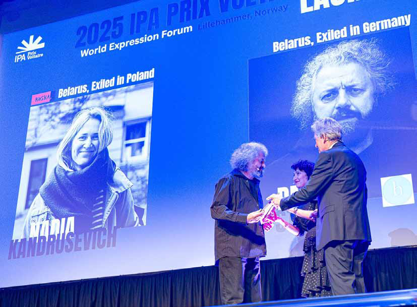
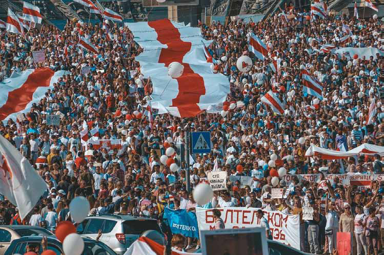
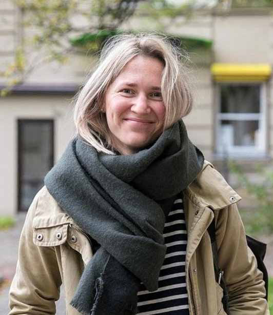
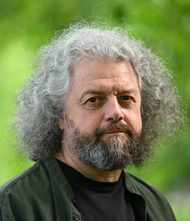
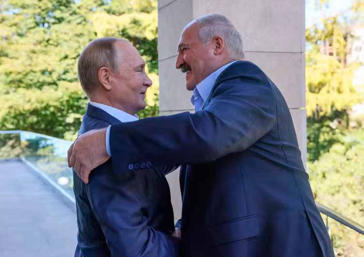

Special Article
Special Article
Jaffna Monitor hellojaffnamonitor@gmail.com 50 They Tried to Silence a Language - These Publishers Fought Back: Belarus’s Literary Rebellion BY: Special Arrangement Dmitri Strotsev receiving the IPA Prix Voltaire award at the World Expression Forum (WEXFO) in Lillehammer, June 2025 Special Article

Jaffna Monitor hellojaffnamonitor@gmail.com 51 A Suitcase and a Mission On a brisk Lillehammer evening in June 2025, Dmitri Strotsev stood under the bright lights of the World Expression Forum (WEXFO) stage, speaking in his native Belarusian. Just moments earlier, he had been handed the IPA Prix Voltaire – a prestigious international award for courage in publishing – jointly with fellow Belarusian publisher Nadia Kandrusevich. Accepting the honor, Strotsev recounted the day he fled Belarus: “In March 2022, I left for the West with one small suitcase. I was fleeing political persecution, but I was also preparing for a new mission — to use thirty years of publishing experience to create a free Belarusian publishing house in exile”. Those gathered in the Norwegian hall fell silent, hanging on his every word. Strotsev’s journey from Minsk to Berlin – from prisoner to Prix Voltaire laureate – is as extraordinary as it is heartbreaking. Back home in Belarus, his independent publishing house had its license stripped by authorities. Undeterred, he operated underground, printing books in secret and circulating forbidden Belarusian literature samizdat-style to readers hungry for uncensored words. In October 2020, amid the regime’s brutal post-election crackdown, Strotsev was arrested and threatened for his work. By early 2022, facing mounting harassment, he made the painful decision to flee. “I left… with one small suitcase,” he told the WEXFO audience. He eventually found refuge in Germany and founded a new press in exile, Hochroth Minsk, as a platform where Belarusian writers could publish freely once again. Even in exile, Strotsev did not work alone. “Today, about thirty Belarusian publishing houses have re-emerged or restored their work in exile, and we are all closely connected. We have a publishing community,” he said, describing a remarkable phenomenon – an entire literary culture uprooted and replanted abroad. Scattered across Europe, these exiled publishers share manuscripts, and resources: to ensure Belarusian stories survive beyond the reach of an authoritarian state. Strotsev’s voice cracked with emotion as he thanked the International Publishers Association for the Voltaire Prize: “This is important support for the Belarusian democratic resistance; this is an open invitation to Belarusian independent publishers to join the global publishing family. In the audience, many wiped away tears. It was clear that this award – more than the CHF 10,000 prize money or the trophy – signified to Strotsev and his colleagues that the world hears them, that they are not forgotten. The Quiet Power of Words Hundreds of kilometers away, in a safe house somewhere in Poland, Nadia Kandrusevich watched a live stream of the Lillehammer ceremony. Unable to travel to Norway, she had sent a statement that was read aloud as she and her family huddled around a laptop. Kandrusevich, founder of the Belarusian children’s publisher Koska, spoke of hope in the face of oppression. “Thank you for the great honor of receiving the Prix Voltaire,” her message began softly. “This recognition affirms not only the importance of publishing and translating books for children but the belief in the quiet power of words to shape minds, to open hearts, and to build bridges across languages, cultures, and generations” For Kandrusevich, who specializes in books for Belarusian youngsters, the act of storytelling itself has become a gentle form of defiance. “Even the smallest readers deserve stories
Jaffna Monitor hellojaffnamonitor@gmail.com 52 that speak truth… This award belongs to all the translators, publishers, and writers who keep working despite all circumstances,” her statement continued, “to all the children who read or listen to bedtime stories and to all the parents who believe in the power of a good book.” Those words carry the weight of Kandrusevich’s own experience. She founded Koska Books in 2018 with a simple dream: to give children access to literature in the Belarusian language—literature full of imagination and free thought. But under President Alexander Lukashenko’s regime, even that became a subversive act. Belarus’s publishing market is dominated by Russian- language books, and independent presses face strict state controls. After Lukashenko’s disputed re-election in 2020 sparked mass protests, the government turned ever more hostile to Belarusian- language culture. Any publisher promoting Belarusian national identity, printing history books that challenged official narratives, or simply releasing books in the Belarusian tongue became a target. “In 2020, Belarus’ government intensified its campaign of censoring publishers that promoted Belarusian identity, language, or history, or published texts in Belarusian,” notes an IPA report on the country’s worsening climate. Kandrusevich lived this crackdown firsthand: police seized Koska’s publications, and officials threatened to shut her office down. Imagine picture books – storybook tales for kids – being treated as dangerous contraband simply because they were printed in Belarusian. As unrest roiled the nation, Kandrusevich realized even her gentle mission put her in peril. By 2021, the pressure was unbearable. Kandrusevich left Belarus for Sweden

Jaffna Monitor hellojaffnamonitor@gmail.com 53 (after a stop in Poland), carrying with her the manuscripts and artwork of upcoming children’s books. In exile, she refused to let Koska die. Since 2022 she has continued her work abroad, still managing to send new Belarusian books to children back home – often through underground networks and brave volunteers who smuggle storybooks across the border. Language, Censorship, and Resistance in Belarus In Belarus, the sidelining of the Belarusian language and the promotion of Russian is a result of decades of political choices rooted in identity politics, Soviet legacy, and authoritarian control, says a Belarusian literary friend of Jaffna Monitor who wished to remain anonymous—for obvious reasons. He went on to explain that after Belarus gained independence from the Soviet Union in 1991, there was a brief cultural revival. Belarusian was declared the sole state language, and efforts were made to reintroduce it in schools, media, and public life. But all of that changed dramatically when Alexander Lukashenko— who still holds power today and is often described as Europe’s last dictator—came to power in 1994. Lukashenko, a former state farm director with strong Soviet leanings, won the country’s first post-Soviet presidential election by projecting himself as an anti-corruption populist who promised stability amid economic chaos. But once in power, he quickly consolidated authority and steered Belarus back toward Moscow’s orbit. Lukashenko openly championed a pan-Slavic identity—an ideology that envisions the unity of Slavic nations, particularly under Russian leadership. In this worldview, the Belarusian language is seen as provincial or divisive, while Russian is portrayed as a unifying and "superior" Slavic tongue. Dmitri Strotsev Nadia Kandrusevich


Jaffna Monitor hellojaffnamonitor@gmail.com 54 In 1995, Lukashenko held a controversial referendum that made Russian an official language alongside Belarusian. But as our source explained, “Though both were declared official, the real motive was clear: to push Belarusian into the background and re- establish Russian as the dominant language in all spheres of life.” Our source continued: “There were several reasons for this shift. Throughout the 20th century, Russian was the language of power, prestige, and education in Soviet Belarus. In contrast, Belarusian was associated with peasants and the rural poor. Russian was spoken by the educated; and Belarusian by the common folk. That created a lasting perception—Russian was modern, Belarusian was backward.” But beyond the colonial hangover, the true reason, he said, lies in raw political control. “Lukashenko’s deep attachment to Russian over his own mother tongue reflects his willingness to go to any extent to remain in power,” the source told us. Promoting Russian ensured tighter alignment with Moscow and helped Lukashenko stay in the Kremlin’s good books, thus keeping Belarus within Russia’s geopolitical grip. “He knew that reviving the Belarusian language would inevitably lead to a revival of Belarusian nationalism,” our source said. “And with it, a stronger sense of national identity— something that could eventually threaten his rule. He was never going to let that happen.” To suppress that possibility, Lukashenko systematically undermined Belarusian culture. Belarusian dictator Alexander Lukashenko embracing his ally, Russian President Vladimir Putin

Jaffna Monitor hellojaffnamonitor@gmail.com 55 He publicly called the language “primitive” and “unnecessary”. That mindset, combined with deliberate policies to underfund Belarusian- language schools and media, gradually pushed the language out of public life. “Today, most Belarusians speak Russian at home, especially in the cities,” he explained. “Schools operate mostly in Russian. Belarusian is now mostly confined to poetry, folklore, or nationalist activism. Speaking, writing, or publishing in Belarusian today is more than just a cultural choice—it is an act of quiet resistance.” In late 2020 and 2021, authorities raided publishing houses, confiscating books printed in Belarusian and jailing publishers on trumped-up “extremism” charges. The very act of printing in Belarusian – one of Europe’s oldest languages – had been criminalized. It was during this frenzy of repression that Belarus’s independent publishing community essentially went into exile. Some fled to Poland, Lithuania, or Ukraine; others to Germany or Sweden. They carried with them boxes of books and hard drives full of manuscripts. Inside Belarus, the regime tries to fill the void with state-sanctioned, mostly Russian- language material. But clandestinely, many Belarusians seek out the literature of their own language. Every time a Belarusian buys a smuggled book of local poetry, or a parent surreptitiously reads their child a Belarusian bedtime story, Lukashenko’s effort to erase a national identity is subverted. As one Belarusian poet noted, “preserving the Belarusian language and culture [is] continuing their fight for a democratic and truly independent country”. In Belarus today, publishing in Belarusian has truly become a form of political resistance – a way of saying we exist in the face of a regime that wishes otherwise. A Ceremony of Solidarity and Hope Back in Lillehammer, as the 2025 IPA Prix Voltaire ceremony drew to a close, the significance of the moment extended far beyond the two Belarusian laureates. The WEXFO gathering itself bore the theme “Year of Resistance,” and there could hardly be a more fitting embodiment of literary resistance than Kandrusevich and Strotsev. “In this story of resistance, we all are also characters. 2025 IPA Prix Voltaire laureates are central characters,” said Gvantsa Jobava, the IPA President, praising the pair. “At great personal risk, they are inspiring hope, demanding reflection, carrying culture. It is an honor to celebrate them.” In the crowd was a Palestinian bookseller whose shop in Gaza was bombed and rebuilt; a Turkish publisher who had endured prison for printing “unpatriotic” novels; an Afghan editor who evacuated her entire press staff when the Taliban took over. The Prix Voltaire, awarded annually by the International Publishers Association, has highlighted such heroes from every corner of the world. Past laureates include Belarus’s own Ihar Lohvinau (2014), whose Minsk bookshop was shut down for selling an “undesirable” photo album, Mazin Lateef Ali of Iraq (2023), who disappeared after publishing books on government corruption, and Samir Mansour of Palestine (2024), who rebuilt his Gaza bookshop from rubble only to see it targeted yet again in war. By honoring Kandrusevich and Strotsev in 2025, the award shone a spotlight on Belarus’s plight and sent a message of solidarity: the free world stands with those who risk everything to keep truth alive in print.